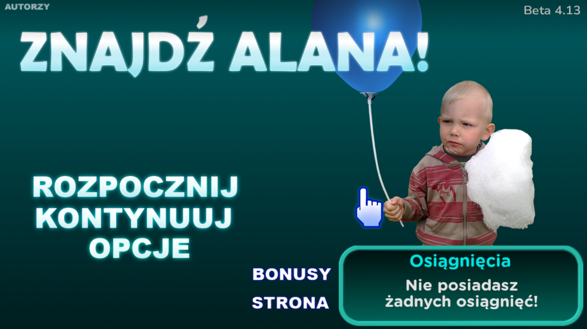
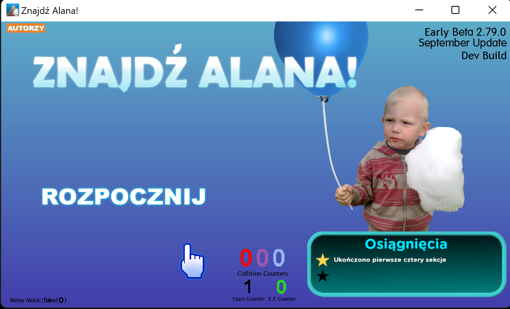
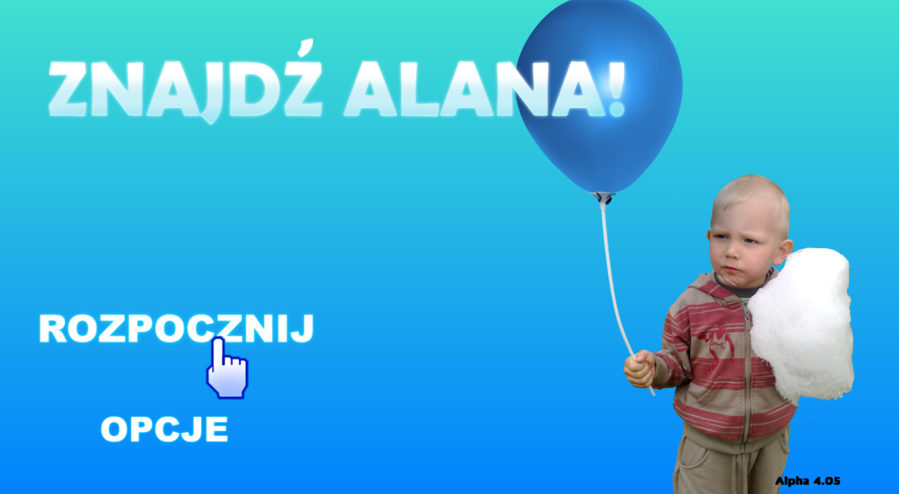
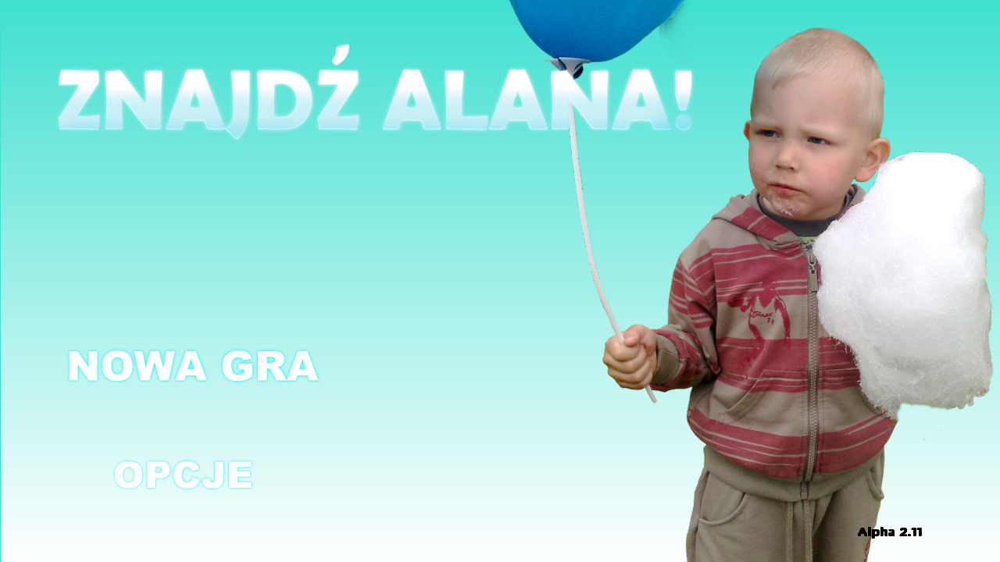

Stało się. Gra „Znajdź Alana!“ doczekała się swojej finalnej wersji BETA! Wszystko jest prawie gotowe, mamy w planach wypuszczenie pierwszego stabilnego wydania. Wszystko stanie się w swoim czasie...
Powrót z nową wersją i kolejnymi poprawkami
Nie mogliśmy się powstrzymać i dopracowaliśmy naszą grę w całości. Tak oto powstała wersja Beta 5.90. Zdaję nam się, że jesteśmy coraz bliżej wypuszczenia wersji stabilnej.

Beta 4.13
A więc naszła pora na kolejną wersję gry. Tym razem jest to Beta 4.13 a zarazem początek czegoś nowego.
Pudełkowa wersja X-MAS Edition na komputery PC
Wersja pudełkowa świątecznej wersji już w sprzedaży! Do kupienia w oficjalnym sklepie merchandise.
Aktualizacja świąteczna
Z okazji świąt Bożego Narodzenia postanowiliśmy wydać dla Was świąteczną edycję mojej gry. Oprócz zmienionej oprawy graficznej naprawiliśmy też wiele bugów i błędów. Miłej gry!
November Update
Dzień dobry! Po tej krótkiej przerwie, przychodzimy do was tym razem z listopadowym wydaniem „Znajdź Alana!“. Wprowadziliśmy wiele zmian, czekamy niecierpliwie na ocenę społeczności. Zachęcamy serdecznie do pobrania.

Beta 2.79.1 (wydanie deweloperskie)
Witamy wszystkich po kilkumiesięcznej przerwie. Kolejny raz przychodzimy do Was z nową wersją gry! Jak narazie, jest to wydanie deweloperskie i widoczne są niektóre surowe elementy, jednak gra wciąż prezentuje się dobrze i jest jak najbardziej grywalna.
Beta 1.02
Nowa wersja "Beta" już dostępna w sekcji pobrań!
Plakat „Znajdź Alana!”
Wyrobiłem plakat mojej gry na ścianę. Jestem z tego naprawdę dumny i cieszę się, że mogę spoglądać na obraz gry poza monitorem. Sklep z merchandise „Znajdź Alana!” już wkrótce!
Życzymy tego każdemu użytkownikowi!
Tak wygląda okienko po przejściu wszystkich poziomów. W ramach ciekawostki dopowiem, że da się odblokować owe osiągnięcia tajnym deweloperskim skrótem.
Ewolucja i podsumowanie serii "Alpha"
Wersja Alpha 6.00 będzie prawdopodobnie ostatnią wersją Alpha. W kolejnych wersjach które będą już na stopniu Beta planuję wprowadzić wiele zmian wizualnych zarówno jak i w działaniu gry. Alpha 6.00 już wkrótce pojawi się na stronie, bądźcie czujni!
Nowości w Alpha 5.10.1
Alpha 5.10.1 to początek osiągnięć w grze. Oprócz tego lekko odświeżyłem logo w menu głównym i dodałem kilka zdjęć do poszczególnych poziomów trudności. Życzę miłej gry!
Help wanted!
Poszukuję testerów do gry. Chętni proszeni są napisać na e-maila podanego w zakładce "kontakt".
Zmiany w wersji Alpha 5.00
Nadeszł czas na kolejną większą aktualizację. Do tej wersji dołączono nowy ekran ładowania, nową ikonę, nowe poziomy. System i mechanika poziomów uległa naprawie. Szerszy opis na stronie pobierania. Dobrej zabawy!

Alpha 4.05
Niewielkie poprawki, kilka nowych zdjęć i rozszerzona grywalność.
Samouczek
A więc kolor tła w samouczku uległ zmianie. Myślę, że wygląda teraz nieco lepiej niż w starszych wersjach.
Alpha 4.01 - początek czegoś nowego...
Tą aktualizację uznaję jako największą jaka do tej pory powstała. Wydawać się może, że jest to wielki przeskok gry na wyższy poziom, ale czy tak naprawdę jest? Przekonaj się sam pobierając nową wersję gry w zakładce "pobieranie".
Alpha 3.02 - zmiany wizualne
W tym wydaniu widać znaczącą zmianę w menu głównym. Akurat oprócz tego rozszerzyłem i poprawiłem też grywalność. Pobierz teraz i przetestuj sam!
„Znajdź Alana! Premium” na Nintendo Wii
Brakuje Ci zabawy w klasycznej grze? Znaleźliśmy na to rozwiązanie! „Znajdź Alana! Premium” to ostatnie i najlepsze wydanie Znajdź Alana! na konsolę Nintendo Wii. Szukaj gry w dobrych sklepach lub zakup cyfrowo poprzez sklep Nintendo. Miłej zabawy!

Alpha 2.11
Poziom bardzo łatwy w końcu skompletowany. Odświeżyłem też nieco menu i opróżniłem je z niepotrzebnych opcji.
Making of Alpha 2.10-2.11
Jestem w trakcie robienia poprawek do ostatniej wersji „Znajdź Alana!”. Moim celem jest rozszerzenie grywalności i ilości zdjęć. Alpha 2.11 już niedługo!
Alpha 2.10 - grywalność na swoim miejscu
W wersji Alpha 2.10 zrobiłem grywalny, testowy poziom. Jest w nim kilka zdjęć Alana Śliwusia.
Alpha 1.01
Wersja testowa Alpha 1.01 już dostępna!
Znajdź Alana! na komputery PC już wkrótce!
Jest to dobra wiadomość dla tych którzy nie posiadają Nintendo Wii lub DS. Pierwsza wersja testowa pojawi się na stronie już za chwilę.
Znajdź Alana! Easter Edition
Z okazji nadchodzących świąt wielkanocnych szykuję niezwykle wielką aktualizację do gry „Znajdź Alana!”. Będzie ona dostępna zarówno na wersję Nintendo Wii jak i Nintendo DS.